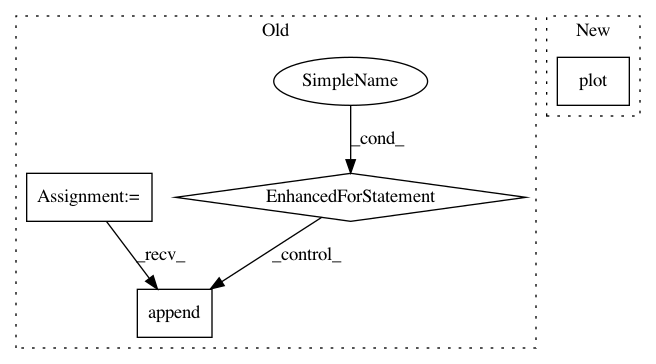

4858a3da74bc14eeaf724c9896bfe77df9451548,PyMC2/tests/test_norm_approx.py,test_norm_approx,check_draws,#test_norm_approx#,34
Before Change
def check_draws(self):
N = NormalApproximation(model)
N.fit("fmin")
draws = []
for i in range(1000):
N.draw()
draws.append(hstack((N.alpha.value, N.beta.value)))
draws = array(draws)
plot(draws[:,0],draws[:,1],"k.")
xlabel(r"$\alpha$")
ylabel(r"$\beta$")
After Change
N.fit("fmin")
N.sample(1000)
plot(N.alpha.trace(),N.beta.trace(),"k.")
xlabel(r"$\alpha$")
ylabel(r"$\beta$")
if __name__=="__main__":
In pattern: SUPERPATTERN
Frequency: 3
Non-data size: 4
Instances
Project Name: pymc-devs/pymc3
Commit Name: 4858a3da74bc14eeaf724c9896bfe77df9451548
Time: 2007-09-13
Author: anand.prabhakar.patil@15d7aa0b-6f1a-0410-991a-d59f85d14984
File Name: PyMC2/tests/test_norm_approx.py
Class Name: test_norm_approx
Method Name: check_draws
Project Name: mne-tools/mne-python
Commit Name: 06298716dc48db52f69496e4248927f90925ee65
Time: 2020-10-22
Author: larson.eric.d@gmail.com
File Name: examples/inverse/plot_evoked_ers_source_power.py
Class Name:
Method Name:
Project Name: interactiveaudiolab/nussl
Commit Name: 97b74b011d7f4e3a144be6417a7285c0fc91fd72
Time: 2017-09-16
Author: ethanmanilow@gmail.com
File Name: demos/demo_ica.py
Class Name:
Method Name: main